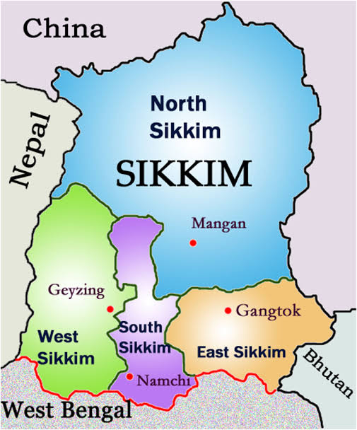

SIKKIM
The Organic State of India

Social Science Project
The Organic State of India
Social Science Project
Sikkim is a state in Northeast India. It is bordered by China on the north, Nepal on the west, Bangladesh on the east, and West Bengal on the south. It sits at the foot of the Himalayas, making it one of the three key Ecoregions in India.
From tropical plants to alpine tundra, the biodiversity here is immense. Did you know almost 81% of Sikkim comes under forest administration? That is why it is known as the "Green State".
Sikkim has numerous National Parks to preserve its beautiful wildlife, the most famous being the Khangchendzonga National Park, home to Mount Kangchenjunga.
Sikkim is a mountainous state with dramatic elevation changes. It features lower hills, high alpine zones, and snow-bound northern regions. The landscape is dissected by rushing rivers like the Teesta and Rangeet.
The climate varies significantly with altitude:
The state experiences heavy monsoon rainfall from May to September and cold, snowy winters from November to February.
Sikkim has a harmonious culture influenced mainly by three communities: Lepcha, Bhutia, and Nepali. Festivals, music, dance, and religious practices play an important role in daily life.
Religion: Buddhism and Hinduism are the main religions followed in the state.
Languages:
The official languages include Nepali, English, and Hindi. Other regional languages spoken include Lepcha, Bhutia, and Limbu.
Sikkim's traditional dances reflect nature, harvests, and prosperity. They are vibrant, rhythmic, and showcase elaborate costumes.
These dances are a way to showcase rich cultural narratives and community joy during special occasions like harvests and religious celebrations.
Sikkim's attire is distinct for each community:
Lepcha: Women wear the Dumvum (ankle-length sari-like dress).
Bhutia: Women wear the Bakhu (Kho), a sleeveless silken dress with a blouse. Men wear the robe-like Kho secured by a belt.
Nepali: Women wear vibrant sarees like the Pharia; Men wear churidar pajamas with shirts.
The food of Sikkim is a rich mixture of Nepalese, Tibetan, and native Sikkimese influences. It is known for being soothing to the taste buds.
Agriculture is the backbone of the economy, producing cardamom, maize, and rice. notably, Sikkim is India's first fully organic state.
Tourism is a major source of income. The state attracts nature lovers and adventure seekers from around the globe.
Must-Visit Places: